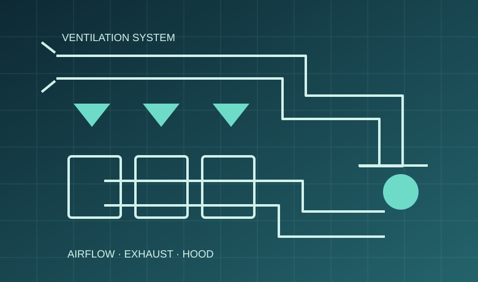

설계·설비·공조·관리,
하나의 시스템으로
학교급식 시설과 상업용 주방은 조리기기뿐 아니라 공간과 열·공기·물 및 작업 흐름을 함께 계획해야 합니다.
필요한 분야에서 시작하세요.
학교급식 설비
조리와 세척 및 배식의 흐름을 살피는 시설 계획입니다. 조리흄과 열기를 줄이는 후드·급배기 설계를 함께 검토합니다.
상업용 주방
외식 주방의 작업 흐름과 공간 배치를 설계하고 공조·덕트와 설치 조건을 연결합니다.
제과제빵기계
반죽과 성형 및 발효·굽기 공정별 장비를 운영 규모에 맞게 구성합니다.
매장 판매설비
진열과 보온 및 판매 단계에서 쓰는 장비를 매장 환경에 맞게 제안합니다.
연구개발 프로젝트
조리과학 연구를 바탕으로 오븐과 조리기자재를 설계하고 시제품을 검증해 왔습니다.
컨설팅
현장 진단에서 공간·동선 설계와 기자재 선정 및 설치·운영 검토까지 함께합니다.
분야별 통합 솔루션
주방 컨설팅 및 배치설계
급식 규모, 작업동선, 조리공정, 위생구역과 주방설비 배치를 종합 검토합니다.
상업용·학교급식 주방설비
대형 취사·조리·세척·냉장·보관 설비와 조리 소도구의 적합성을 검토합니다.
공조·후드·덕트 시스템
조리 열원, 후드 위치, 급기·배기 흐름과 덕트 설치계획을 조정합니다.
설치·검수 및 사후관리
설치 이후의 현장 운영 조건을 고려하며 A/S 및 사전점검(B/S)을 연계합니다.
실제 도면을 이해하는 설계 방식
HP대학 인천캠퍼스 관련 평면도에 나타난 공간 구획을 토대로 공개 가능한 수준에서 동선을 재구성했습니다.

사람과 재료의 흐름을 생각합니다.
검수·저장·전처리에서 조리와 배식, 세척에 이르는 공정을 전체 흐름으로 계획해야 주방의 이용 효율과 운영 편의성을 높일 수 있습니다.
도식은 실제 평면도의 축척이나 건축 구조를 재현하지 않는 교육용 개념도입니다.
공기의 흐름도
주방 설계의 일부입니다.
열원과 후드의 조합, 급기·배기계획, 덕트 구성은 조리공간의 운영환경과 밀접합니다. 설비의 설치 가능성뿐 아니라 점검·유지관리 접근성을 함께 검토합니다.
